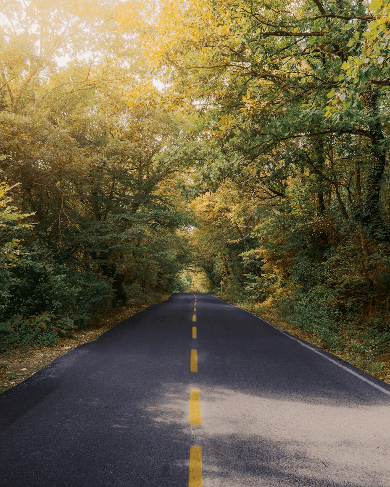

Фритрек и нулевой спринт: Подготовка к работе

</HTML>Это было самое начало пути. На этом этапе важно было проникнуться основами и настроиться на учёбу. И, возможно, подумать, как новые знания могут повлиять на ваше будущее.
Я помню свой первый написанный код — это было одновременно страшно и невероятно волнительно. Но каждый новый тег, каждая строчка приближали меня к пониманию того, как устроен этот мир. И я влюбилась в этот процесс.